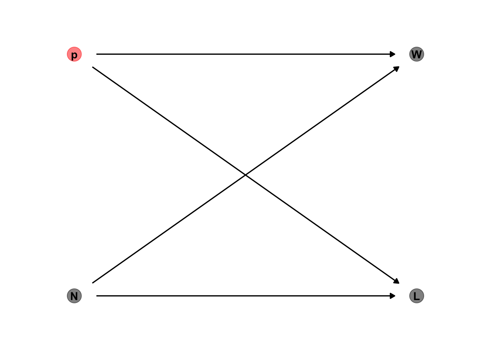
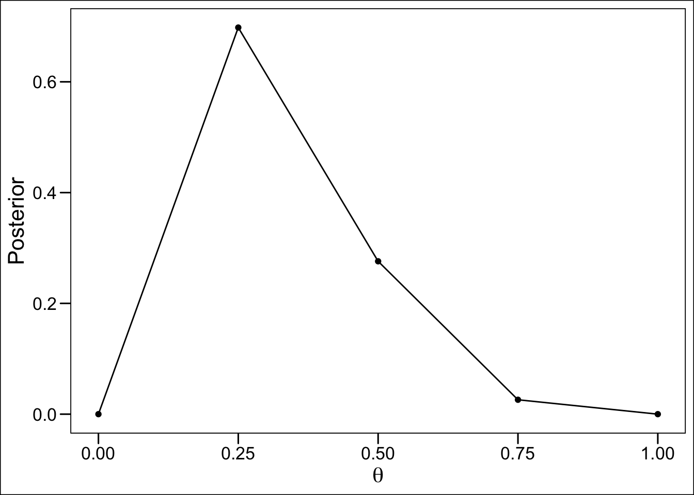
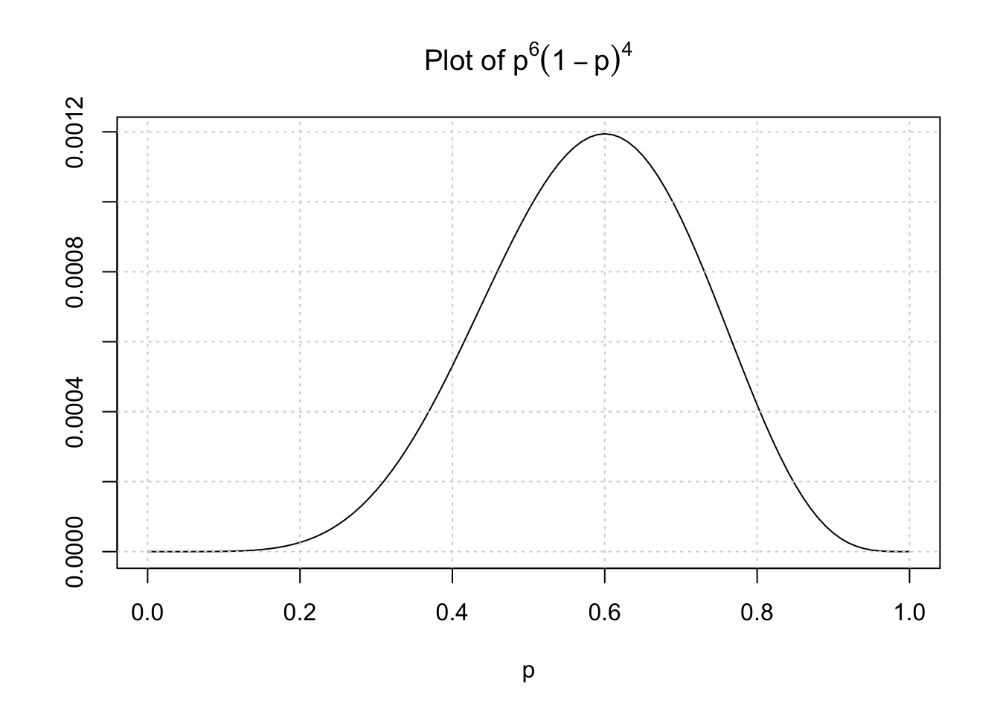
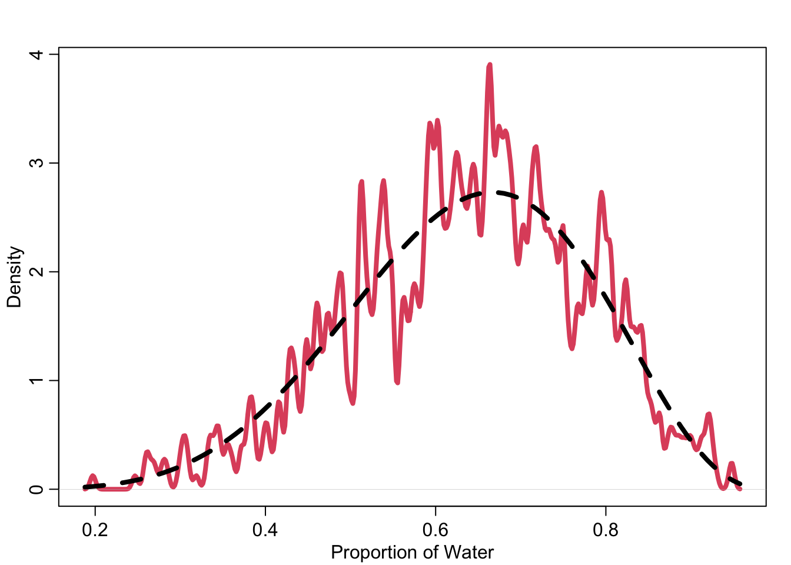
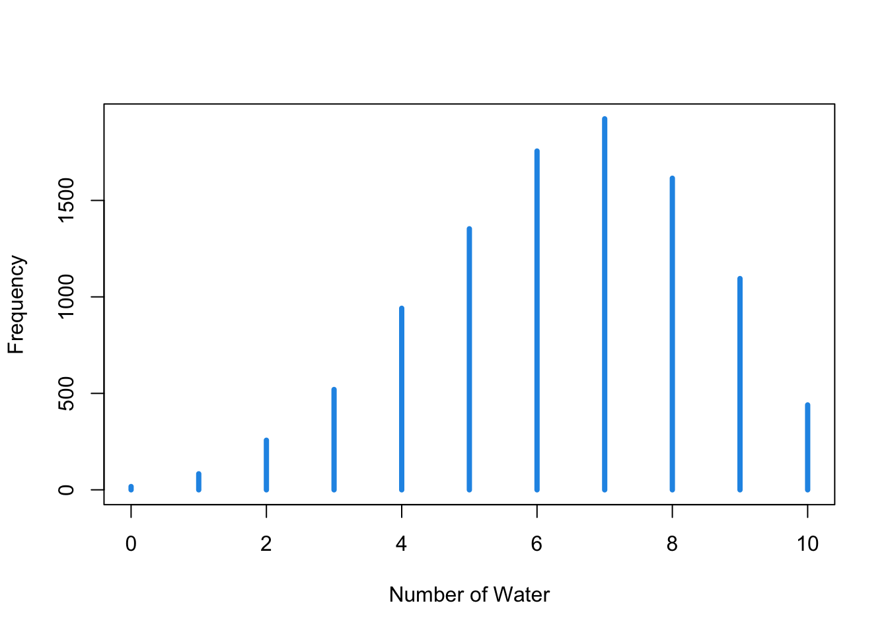
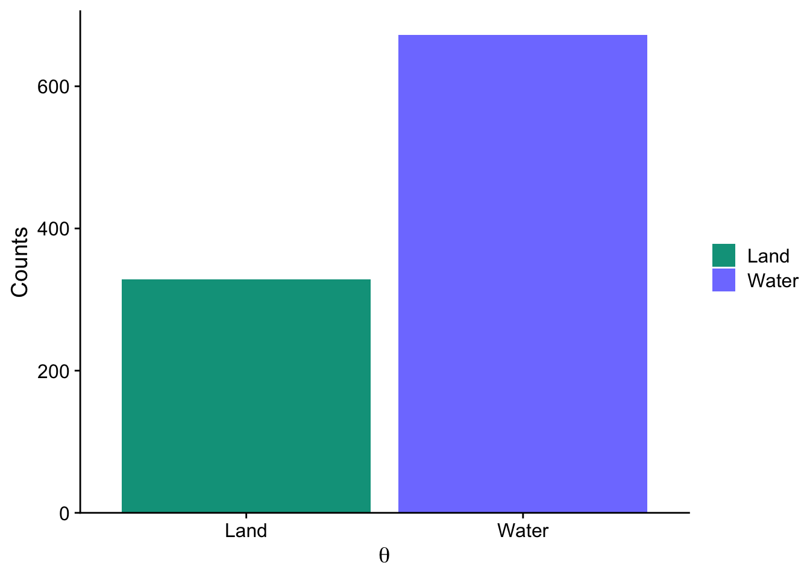

Lecture 2 - The Garden of Forking Ideas
Bayesian Workflow
Define our generative model
Define our estimand
Amount of water \(p\)
Design a statistical way for this estimand
Test 3) using 1)
Analyze sample, summarize
What could be a generative model of the globe example?
Incorporate previous knowledge, how could the data arise?
This Dag says that \(W,L = f(p,N)\).
Cool what now?.
Bayesian Data Analysis is basically just:
- For each possible explanation of the sample, we want to count all ways a sample me be produced. Explanations with more ways to produce the sample are more plausible
Testing
- Code a generative simulation, 2) code an estimater, Test that 2) with 1)
DO IT ALWAYS
# simulate data
throw_world <- function(p = .7, N = 9) {
sample(c(
"W","L" # possible outcomes
), size = N, # number of observations
prob = c(p, 1 - p), # prob of water
replace = TRUE)
}test extreme settings
throw_world(p = 1)[1] "W" "W" "W" "W" "W" "W" "W" "W" "W"sum(throw_world(p = .5, N = 1e6) == "W") / 1e6[1] 0.500325our estimater:
# function to compute the posterior
compost <- function(the_sample, poss = c(0,.25,.5,.75,1)){
set.seed(69)
W <- sum(the_sample == "W")
L <- sum(the_sample == "L")
ways <- sapply(poss, function(q) q * 4^W * ((1 - q)*4)^L)
post <- ways/sum(ways)
bars <- sapply(post, function(q) rethinking::make_bar(q))
print(data.frame(poss, ways, post = round(post,3), bars))
}
compost(throw_world()) |>
ggplot(aes(poss, post)) +
geom_point() +
geom_line() +
ggthemes::theme_base() +
labs(x = expression(theta), y = "Posterior") poss ways post bars
1 0.00 0 0.000
2 0.25 20736 0.698 ##############
3 0.50 8192 0.276 ######
4 0.75 768 0.026 #
5 1.00 0 0.000 
Yep, makes sense
\[ p^W(1-p)^L \]
McElreath recommends plotting the function, so that’s what i will do
# write function
pf <- function(p, W, l){
return(p^W * (1 - p)^L)
}
# Set values for W and L
W <- 6
L <- 4
# plot function
curve(pf(x, W, L),
from = 0,
to = 1,
col = "black",
xlab = "p",
ylab = "",
main = expression(
paste("Plot of ",
p^6 * (1 - p)^4)))
grid()
\[ p = \frac{(W+L+1)!}{W!L!}p^W(1-p)^L \tag{Beta Distribution} \] Yuck non bayesian-stats! There are some confusing things if you look at Bayes from an “outsider perspective”:
- No minimum sample size Does not mean we should only use small samples
- There is only one posterior, which embodies the sample size. That is why we can update it in ligth of new data
- No point estimates, use the whole posterior!
- No true interval, intervals are arbitrary, 95% are superstition Just use the 89% interval for the memes
NHST onl controlls type 1 error rate
Analyze it
# sample from posterior
post <- rbeta(1e3,
7,
4)
rethinking::dens(post, lwd = 4, col = 2, adj = 0.1,
xlab = "Proportion of Water")
curve(dbeta(x,7,4),add = T, lty = 2, lwd = 4)
#ppd
post <- rbeta(1e4, 7, 4)
pp <- sapply(post, function(p) sum(throw_world(p, 10) == "W"))
tp <- table(pp)
# Create an empty plot
plot(1, type = "n", xlim = c(0, 10), ylim = c(0, max(tp)), xlab = "Number of Water", ylab = "Frequency")
# Add vertical lines to the plot
for (i in 0:10) lines(c(i, i), c(0, tp[i + 1]), lwd = 4, col = 4)
BONUS
throw_earth <- function(p = .7, n = 9, x = .1){
true_sample <- sample(c("w","l"), size = n,
prob = c(p,1-p), replace = T)
obs_sample <- ifelse(runif(n) < x,
ifelse(true_sample == "w","l","w"),
true_sample
)
return(obs_sample)
}
set.seed(123) # Set seed for reproducibility
throw_earth(p = 0.7, n = 1000, x = 0.1) |>
tibble(value = `throw_earth(p = 0.7, n = 1000, x = 0.1)`) |>
mutate(value = if_else(value == "w", "Water", "Land")) |>
ggplot(aes(x = value, fill = value)) +
geom_bar() +
scale_y_continuous(expand = expansion(mult = c(0, 0.05))) +
labs(
x = expression(theta),
fill = NULL,
y = "Counts"
) +
cowplot::theme_half_open() +
scale_fill_manual(values =
c(rethinking::rethink_palette[3],
rethinking::rethink_palette[1]))